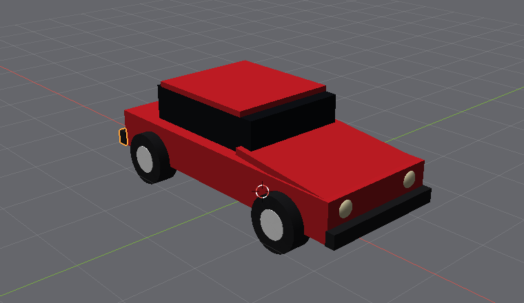

The wheels and the details that make it a car, and then its picture.
0.38, Depth 0.3, and Shading Smooth, so it renders perfectly round.90, 0, 0 stands it on its edge, and Location 1.35, 0.92, 0.38 puts it at the front left.0.9, and the Noise texture with its scale at 40 - rubber.1.35, -0.92, 0.38. Twice more for -1.35, 0.92 and -1.35, -0.92. Four wheels.0.2 and Depth 0.32 - a little wider than the tyre, so it shows - smooth, turned 90, 0, 0, at the first wheel's location. Make it Metal with the white swatch and Roughness 0.4: brushed aluminium. Copy it to the other three wheels as you did the tyres.Press Home and turn around your car. It is a car already.
0.12, smooth. Give it the Scale 0.6, 1, 1 - flattened front to back - and the Location 2.08, 0.6, 0.72. Its material: the Light preset, Base colour fff3c4. Copy it to 2.08, -0.6, 0.72.0.04, 0.36, 0.1 at -2.11, 0.6, 0.78, with the Light preset, colour ff2a1a and Emission 3. Copy it to -2.11, -0.6, 0.78.0.14, 1.84, 0.2 at 2.16, 0, 0.44, Plastic, the black swatch, Roughness 0.6; a copy at -2.16, 0, 0.44.
The finished car, twenty-one objects with the ground, the lamp and the camera, after Home.

What F12 makes of it: 256 samples, 640 by 360 - the red paint catching the lamp, the headlights glowing, the shadow soft on the asphalt.
0 and watch the Rendered view. Every side the lamp does not reach goes black. Then put it back.16 long, 0.3 thick and 4 high, with the Brick texture.